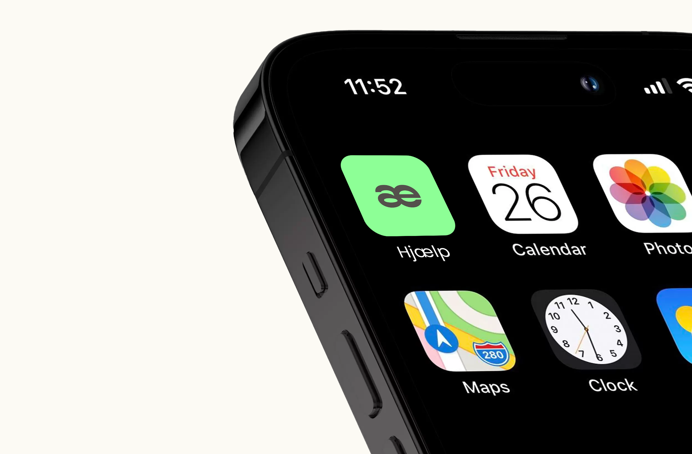
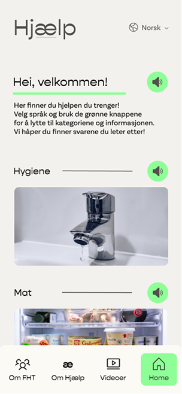
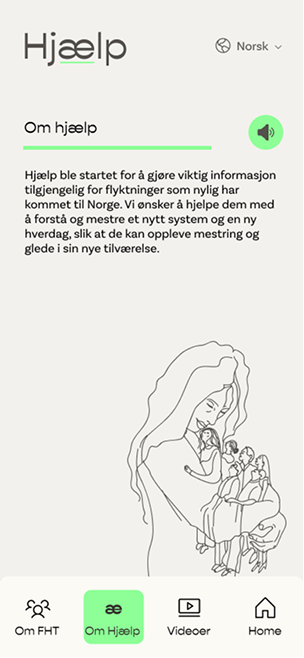
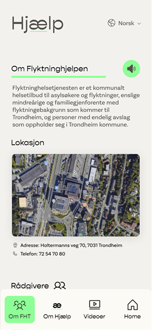

TPD 4204 - Humanitær design
Høst 2024
HJÆLP - Et mestringsverktøy til en ny hverdag i Norge
Nøkkelord: humanitær design, tjenestedesign, brukerinnsikt, digital løsning, prototyping
Tjenesten Hjælp er et digitalt verktøy som gir flyktninger videobaserte steg-for-steg-instruksjoner til hverdagsoppgaver. Løsningen skal styrke selvstendighet og avlaste veiledere, og prosjektet fikk positiv respons fra Trondheim og Malvik kommune. Medstudenter: Caroline Foss Nersnæs, Eirin Abelseth, Ellen Sofie Myrmo-Silset, Natalie G. Sneisen, Ida Marie Duvsethe og Bushra Salamat SanDho
INTRODUKSJON
Hjælp er et videobasert verktøy utviklet for å gjøre flyktninger mer selvstendige i eget hjem, med praktisk veiledning om hvordan man utfører dagligdagse oppgaver. Prosjektet ble utført i samarbejd flyktningehelsetjenesten i Trondheim kommune.

PROBLEMSTILLING
Kommunale veiledere som jobber med å integrere flyktninger i Trondheim står overfor en rekke utfordringer, særlig knyttet til høy arbeidsbelastning og begrenset tid til oppfølging. Dette gir de mindre tid til å fokusere på de mer komplekse aspektene ved integrering, som språkopplæring, arbeidstrening og sosial inkludering. Som følge av dette kan flyktningene oppleve forsinkelser i integreringsprosessen, og veiledere kan oppleve økt stress og utbrenthet. Dette skyldes:
- • Høy arbeidsbelastning: Et lite antall veiledere er ansvarlige for et stort antall flyktninger.
- • Varierte behov: Flyktninger har ulike behov, som krever individuell oppmerksomhet og støtte.
- • Tidkrevende praktiske oppgaver: Veiledere bruker mye tid på praktske oppgaver, som å hjelpe flyktninger med å forstå hvordan ulike husholdningsapparater fungerer eller hvordan man tar seg frem i kollektivtransport.
Ved å løse dette problemet kan vi:
- • Forbedre kvaliteten på støtten: Gi veilederne mulighet til å fokusere på komplekse integrasjonsutfordringer, som språkopplæring, jobbtrening og sosial inkludering.
- • Øke effektiviteten: Redusere den administrative byrden og optimalisere ressursfordelingen.
- • Akselerere integreringen: Muliggjøre en raskere og mer vellykket integrering av flyktninger i det norske samfunnet.
PROSESS
Gjennom dybdeintervjuer med ansatte i Flyktningehelsetjenesten samlet vi innsikt i utfordringene de møter i arbeidet med integrering. Basert på denne innsikten utviklet vi personas som bidro til å identifisere prosjektets problemstilling. Vi så tidlig et behov for et designkonsept som adresserte de praktiske utfordringene flyktninger og deres veiledere står overfor. Vi benyttet oss videre av MoSCoW-analyse for å prioritere hvilke funksjoner som skulle inngå i tjenesten.
KONSEPT
Hjælp er et nettbasert konsept som gir praktiske instruksjoner til flyktninger om hvordan de kan utføre enkle oppgaver i hjemmet. Løsningen skal støtte integreringsprosessen i Trondheim ved å gjøre brukerne mer selvstendige, samtidig som den avlaster rådgiverne. Som et digitalt oppslagsverk gir Hjælp rask tilgang til den informasjonen brukerne trenger, uten ventetid eller kø. Plattformen har et enkelt design uten overflødig informasjon, for å gjøre navigasjonen tydelig og distraksjonsfri. Tjenesten tilbys på flere språk og bruker videoer, illustrasjoner og bilder i stedet for mye tekst, slik at flere kan følge enkle steg-for-steg veiledninger. Målet er å skape mestring og trygghet i hverdagslige oppgaver.

Konseptet bygger på samtaler med flyktningehelsetjenesten i Trondheim, som avdekket utfordringer knyttet til integrering i ny bolig. Hjælp skal gi målgruppen enkel tilgang til nødvendig informasjon, mulighet til å repetere tidligere veiledning og støtte når rådgiver ikke er tilgjengelig.



TILBAKEMELDING
Våren 2025 presenterte vi prosjektet for flyktningeenheten i Trondheim. De var veldig positive til konseptet, og meddelte at dette var en løsning som hadde vært til stor hjelp dersom den ble realisert. Vi fikk også positiv respons fra Malvik kommune, som også tenkte at dette kunne være et nyttig verktøy.